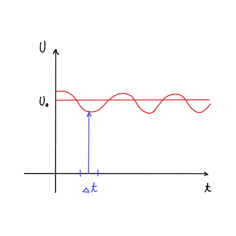
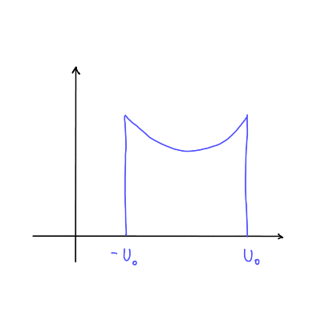

2026/02/19
Meritve in merilen šum: slednji je nedeterministična, naključna spremenljivka.
Ocene, združevanje ocen: ocena je naključna spremenljivka okoli prave vrednosti z nedoločenostjo.
Korelirane ocene
Optimalen filter za združevanje, sledenje spremenljivkam (konstantam ali skalarnih spremenljivkam)
Vektorske spremenljivke
Univerzalen merilni sistem
Red senzorja - zakaj je nek merilni sistem dober
Vpliv senzorja na opazovani sistem
Termični šum na uporniku.
Merjenje konstantnih signalov (postprodukcija signala)
Metoda najmanjših kvadratov, lock-in detekcija, luščenje valov spektrih
Merjenje
Primer, kako kameleon meri/dojema razdaljo. Na \( 10 \mathrm{cm} \) oceni razdaljo na \( 100 \mu \mathrm{m} \) natančno.
Iščemo predpis za optimalno sinhronizacijo opazovalnega sistema \( S \) in merilnega sistema \( M \). Sistem \( S \) ima spremenljivko \( x_s (t) \), merilni sistem pa ima oceno meritve \( \hat{x}_m \). \( \hat{\cdot} \) nam bo povedala, da je to ocena. Opazovalni in merilni sistem povezuje nek detektor.
Zahteve za detektor so:
Dinamika je bistvena sestavine filtrirnega procesa
Opazujemo gibanje telesa v eni dimenziji.
Izmerili smo lego telesa skozi čas, in vsak izmerek ima svojo nedoločenost. Nedoločenost nam pove, da je izmerek porazdeljen v okolici \( z \) okrog prave vrednosti \( x \).
Pravimo, da so izmerki \( z \) porazdeljeni z normalno porazdelitvijo \( N(x, \sigma) \).
Izmerke zapišemo kot
\[ z(t) = x(t) + r(t), \]
kjer je \( r(t) \) normalno porazdeljen merilni šum.
V primeru, da o spremenljivki ne vemo ničesar \( x_s (t) \). V tem primeru mora velja
\[ x_M = z(t), \]
kar pomeni, da lahko meritve samo povežemo skupaj.
Drug možen primer, da poznamo dinamiko (v našem primeru npr. premoenakomerno gibanje, kjer je \( a = 0 \) in \( v = \mathrm{konst} \)).
Tretja možnost je, da ne poznamo dinamike, vendar poznamo lastnosti sistema. Primer tega je, da vemo, da je \( a < \infty \) oz. lahko še bolj natančno \( a \le 5 \frac{\mathrm{m}}{\mathrm{s}} \) in npr. \( v < c_0 \), kjer je \( c_0 \) svetlobna hitrost. To nam omgooča, da z bolj prilagojeno krivuljo povežemo izmerke med seboj.
V nadaljevanju si bomo ogledali
Imamo izmerek
\[ z_1 = x + r_1, \]
kjer je \( r_1 \) normalni šum, \( x \) pa prava vrednost. Ker je šum naključna spremenljivka, je tudi \( z_1 \) naključna spremenljivka. Velja
\[ \frac{\mathrm{d} P}{\mathrm{d} r_{1}} = \frac{1}{\sqrt{2 \pi} \sigma_1} \exp \left\{ - \frac{r_1 ^2}{2 \sigma_1 ^2} \right\} = N(0, \sigma_1). \]
Drug izmerek je \( z_2 = x + r_2 \), kjer je \( r_2 \) ponovno porazdeljena po \( N(0, \sigma_2) \).
\( \sigma \) je vrednost pri Full Width Half Maximum in je
\[ FWHM = 2.3 5 \sigma = \sqrt{2 \ln 2} (2 \sigma) \approx 2 \sigma \]
Šum ima Gaussovo porazdelitev zaradi centralnega limitnega izreka (CLI), ki pravi, da vsota
\[ r = \sum\limits_{i = 1}^{N \to \infty} r_i \]
teži h Gaussovi porazdelitvi ne glede na porazdelitev (manjka beseda) posameznik prispevkov.
To je motnja zaradi napajanja z AC napetostjo pri frekvenci \( \nu = 50 \mathrm{Hz} \).

Meritev izvedemo zelo hitro, predpostavimo trenutno meritev, ki jo označimo z \( U_m \).
Opazovalni sistem je \( U = U_0 \cos (\omega t) \). Povprečna vrednost je
\[ \left\langle U(t) \right\rangle = 0. \]
Porazdelitev je neodvisna od časa, torej
\[ \frac{\mathrm{d} P}{\mathrm{d} t} = \mathrm{konst} = \frac{1}{\frac{T}{2}}, \]
kjer je \( \frac{T}{2} \) polovica obhodnega časa \( T = \frac{1}{\nu} \).
Porazdeljenost pa je odvisna od časa in bo
\[ \frac{\mathrm{d} P}{\mathrm{d} U}= \frac{\mathrm{d} P}{\mathrm{d} t} \frac{\mathrm{d} t}{\mathrm{d} U} = \frac{1}{\frac{T}{2}} \cdot \frac{1}{\omega_0 U_0 \sqrt{1- \cos ^2 (\omega t)}} = \frac{1}{\pi} \frac{1}{\sqrt{U_0 ^2 - U ^2}}, \]
kjer smo upoštevali
\[ \mathrm{d} U = - \omega U_0 \sin (\omega t) \mathrm{d} t \quad \text{ in } \quad \omega = 2 \pi \nu = \frac{2 \pi}{T}. \]
Takemu šumu pravimo Brumov šum.

Z večanjem števila prispevkov gre in fact res proti Gaussovi porazdelitvi - konvolucija prispevkov.